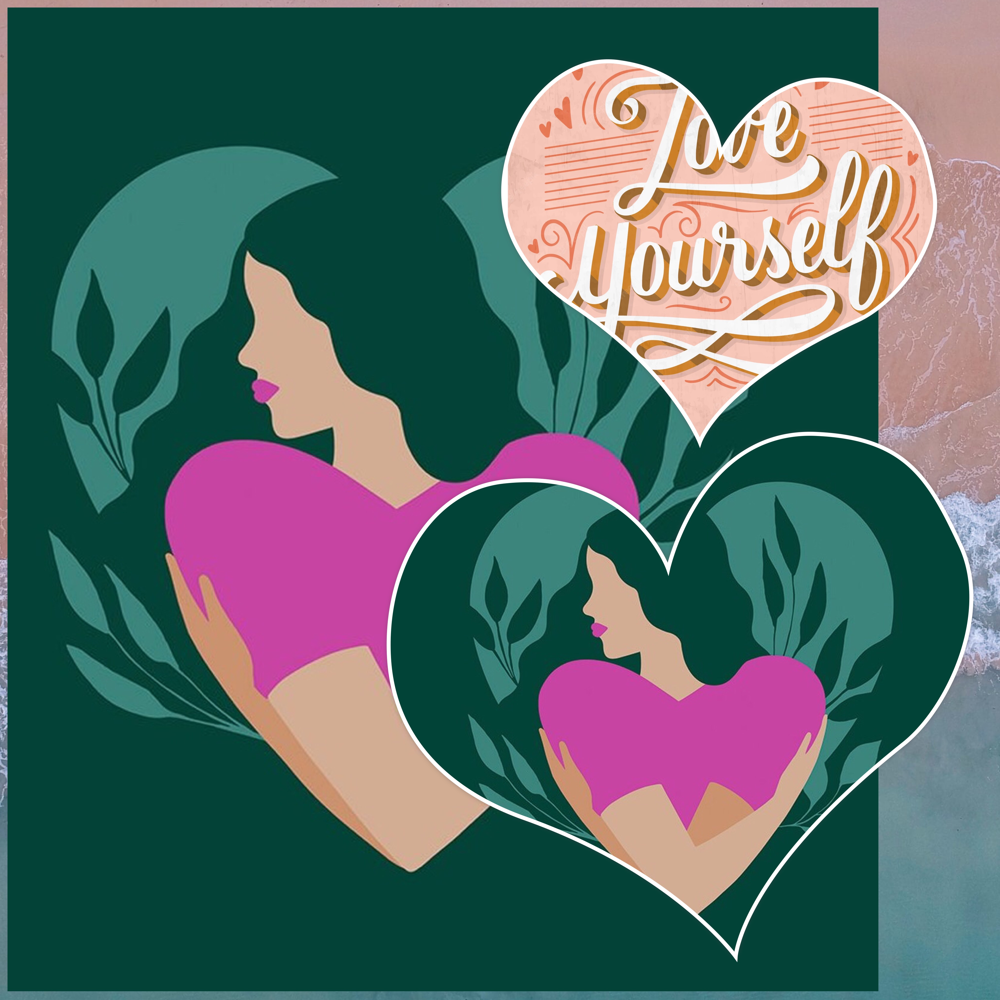

Introducing Nutrify Services… our mission is to "Nutrify" not just merely "Beautify"
Want to learn how to nourish your skin, hair, and nails through nutrition first & foremost instead of relying on treatments/tweakments or even supplements that claim to give great results. Enhance what's naturally yours, fortify it with the nutrients it needs through proper nutrition & fuel your way to nourished skin, hair, nails… achieve that healthy & nourished beautiful glow — or as I like to call it a "Nutritious Glow".
While our main focus is Nutrition as the #1 intervention, we can also curate a sample skincare routine especially just for you & your unique skin/hair type along with product recommendations & ingredients evaluation specific to your needs or concerns. (All resources are backed by the latest research in Nutrition & Dermatology)
But wait there's more… we also provide "Nutrition for the Soul" — with the help of nutrition you can elevate your state of mind and reach a higher level of Selfcare. Whether you want to know how to stay afloat during times of stress or learn better ways of navigating your day to day ebbs & flows, Nutrify Selfcare is your answer!
Our Nutrify Services
Category 1
Nutrify "Skin"
Nutrify "Skincare"
Focuses on skin health in general & building a skincare routine specific to your skin type (normal, dry, oily, combo) & concerns (acne prone, pigmentation, etc.). Includes: nutrition for healthy skin, personalized skincare routine, product recommendations or evaluation, active ingredients guide. Specific concerns can be added as bundles.
Nutrify "Skin Health"
Specifically for skin conditions like eczema, dermatitis, & allergic skin reactions to food. Includes: nutrition tips for managing flare ups, trigger food list, tips on avoiding future recurrence, product recommendation guide (as some products worsen conditions), do's & don'ts during flare phases.
Category 2
Nutrify "Hair"
Nutrition for healthy strong hair, supplement recommendations & tips for hair thinning, shedding, hair loss, hair transplants, scalp health & more. Product recommendations specific to your hair type (straight, wavy, curly, oily vs. dry scalp) — how-to-use guide available upon request.
Category 3
Nutrify "Self Care"
Nutrify "Selfcare"
For those who have outgrown the idea that Selfcare is just a pamper/beauty routine. This is about your daily lifestyle rituals, habits & coping mechanisms. Topics: nutrition & psychology, new habit formation, breaking old ones, thought patterns, hobby formation & more. Real, deep lifestyle tweaks.
Nutrify "Zen"
For the "Busy Bees" — those running around all day until maxed out & drained. Focus: stress management & recovering from burnout. We'll work together to navigate through your stress state, provide nutritional tips & lifestyle recommendations, and supplementation guidance if needed. A peaceful state of mind is attainable.
Category 4
Nutrify "Nails"
Nail care through nutrition — supplement recommendations, general nail care tips, and nutritional guidance for stronger, healthier nails from the inside out.

À La Carte — Your Way
All services are completely customizable. Mix & match based on your needs — get a single service, a sub-service, or stack more than one into an individualized bundle of your choice.
Go wild with your selection, I'm all for it!
Book a Nutrify Session